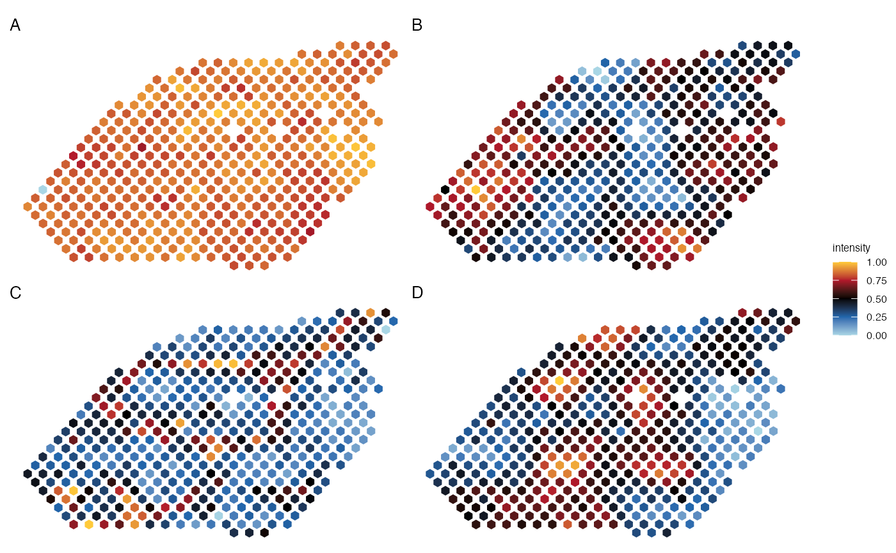
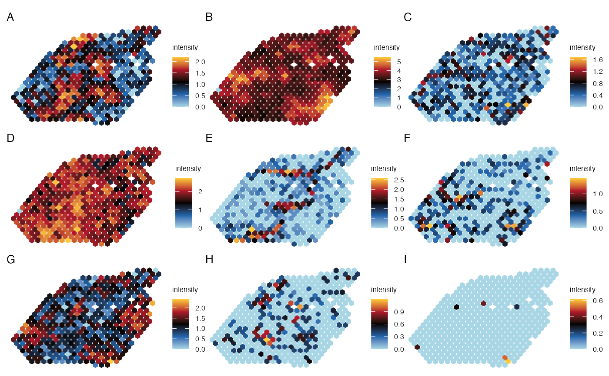

R/plot_spatial.R
plot_spatial_panel.RdThis function creates a panel of scatter plots for the spatial expression of a list of genes across spots, where the X and Y coordinates represent the spatial location of spots and the color represents the expression level of the gene.
plot_spatial_panel(
seurat_obj = NULL,
genes = NULL,
metadata = NULL,
intensity_slot = c("data", "counts", "sct"),
title = "",
size_title = 10,
face_title = c("plain", "italic", "bold", "bold.italic"),
barwidth = 1,
barheight = 3,
axis = TRUE,
panel_names = NULL,
ncol_layout = NULL,
legend = TRUE,
guides = NULL,
pt_size = 3.6,
pt_shape = 6,
pt_star = TRUE,
stroke = 0,
coord_flip = TRUE,
colours = colors_for_gradient("Ju1")
)A Seurat object containing spatial expression data.
A vector of gene names to plot.
Provide a vector of metadata that will be used instead of genes (i.e. from meta.data) slot of a seurat object.
The assay slot to use for the gene expression values. Must be one of "sct", "counts", or "data". Default is "sct".
The title of the plot. Default is an empty string.
The size of the titles.
Font face for the title. Possible values are “plain”, “italic”, “bold” and “bold.italic”.
A numeric or a grid::unit() object specifying the width of the colourbar. Default value is legend.key.width or legend.key.size in theme() or theme.
A numeric or a grid::unit() object specifying the height of the colourbar. Default value is legend.key.height or legend.key.size in theme() or theme.
Whether to display a axis for the color scale. Default is FALSE.
A vector of panel names to use for each gene plot.
Number of columns to use for the panel layout. Default is the ceiling of the number of genes divided by 2.
Whether to display a legend for the color scale. Default is FALSE.
A string specifying how guides should be treated in the layout. See patchwork::plot_layout().
The size of the points in the plot. Default is 2.1.
The shape of the points in the plot. Default is 16 (a circle).
A boolean. Whether to use ggstar shapes.
The thickness of margin of points.
Whether to flip coordinates.
A vector of colors.
A ggplot2 object containing the panel of scatter plots.
library(Seurat)
load_example_dataset("7870305/files/lymph_node_tiny_2")
#> |-- INFO : Dataset 7870305/files/lymph_node_tiny_2 was already loaded.
load_example_dataset("7870305/files/lymph_node_tiny_clusters_2")
#> |-- INFO : Dataset 7870305/files/lymph_node_tiny_clusters_2 was already loaded.
lymph_node_tiny_2 <- Seurat::AddModuleScore(lymph_node_tiny_2, features = lymph_node_tiny_clusters_2@gene_clusters, nbin = 15)
for(i in 1:nclust(lymph_node_tiny_clusters_2)){ # Normalizing module scores
tmp <- lymph_node_tiny_2[[paste0("Cluster", i, sep="")]]
max_tmp <- max(tmp)
min_tmp <- min(tmp)
lymph_node_tiny_2[[paste0("Cluster", i, sep="")]] <- (tmp[,1] - min(tmp))/(max_tmp - min_tmp)
}
plot_spatial_panel(lymph_node_tiny_2, metadata=paste0("Cluster", 1:4), ncol_layout=2,
guides='collect', pt_size=2.2, coord_flip=TRUE)
#> |-- INFO : Feature is not a factor.
#> |-- INFO : Feature is not a factor.
#> |-- INFO : Feature is not a factor.
#> |-- INFO : Feature is not a factor.

plot_spatial_panel(lymph_node_tiny_2, gene=c('VPREB3', 'IGHG1', 'PRDX4',
'LTB', 'CCL20', 'LYVE1',
'IL7R', 'RGS9', 'MAPT'),
ncol_layout=3,
pt_size=2, coord_flip=TRUE,
panel_names=LETTERS[1:9],
size_title = 10)
#> |-- INFO : Feature is not a factor.
#> |-- INFO : Feature is not a factor.
#> |-- INFO : Feature is not a factor.
#> |-- INFO : Feature is not a factor.
#> |-- INFO : Feature is not a factor.
#> |-- INFO : Feature is not a factor.
#> |-- INFO : Feature is not a factor.
#> |-- INFO : Feature is not a factor.
#> |-- INFO : Feature is not a factor.
